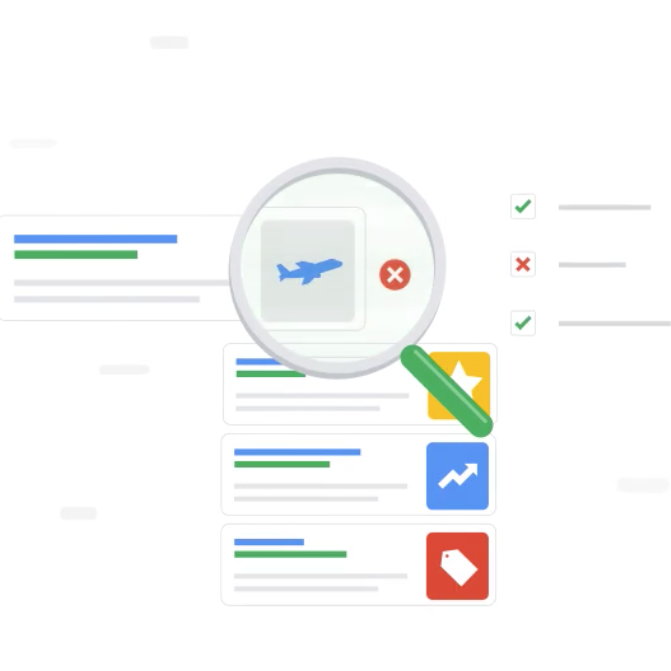

Algoritmi di ordinamento
Come abbiamo detto parlando di tipi, noi viviamo in un mondo fatto di "cose" raggruppate in vario modo: gli studenti della vostra classe, le pizze nel menù della pizzeria, i risultati della ricerca su un sito di e-commerce.
La maggior parte di questi gruppi è ordinato, ovvero tutti gli elementi all'interno di questo gruppo sono messi in una precisa sequenza. Prendendo gli esempi di prima, gli studenti sono messi in ordine alfabetico, le pizze sono spesso messe in ordine di prezzo, e i risultati della ricerca di solito sono messi in ordine di "rilevanza".
Non stupisce quindi che l'operazione di ordinamento è di estrema importanza nel mondo dell'informatica, e l'ottimizzazione fino all'ultimo bit o microsecondo è stato oggetti di profondi studi ed è ancora un ambito di studi in continua evoluzione.
Ordinamento ed osservazione del mondo che ci circonda
Come molto spesso accade, la maggior parte degli algoritmi che vedremo prendono spunto dall'osservazione di come si comportano gli esseri umani quando gli viene chiesto di ordinare qualcosa o dall'osservazione di fenomeni naturali. Personalmente consiglio questo modo di procedere: non rimanere chiusi in una stanza davanti ad un monitor ma uscire fuori, osservare gli altri, la natura, il mondo che ci circonda. Gli inglesi dicono get out of the building. Funziona.
Google e i motori di ricerca

Come in ogni nuovo ambito, i primi che ne hanno capito davvero l'importanza sono riusciti a trarne un enorme profitto. Nel mondo degli algoritmi di ordinamento, possiamo dire che l'azienda che è riuscita in quest'ambito è Google.
La nascita di Google e il suo core business ancora oggi sono infatti basati sul suo noto motore di ricerca www.google.com. Di base, un motore di ricerca è un enorme algoritmo di ordinamento che mette in un preciso ordine dei link a pagine web secondo una serie di diversi fattori (Google li chiama ranking factors), nel caso di Google circa 200. Una panoramica sul motore di ricerca di Google lo trovate qui, mentre la pagina ufficiale funzionamento della "Ricerca Google" la trovate qui qui.